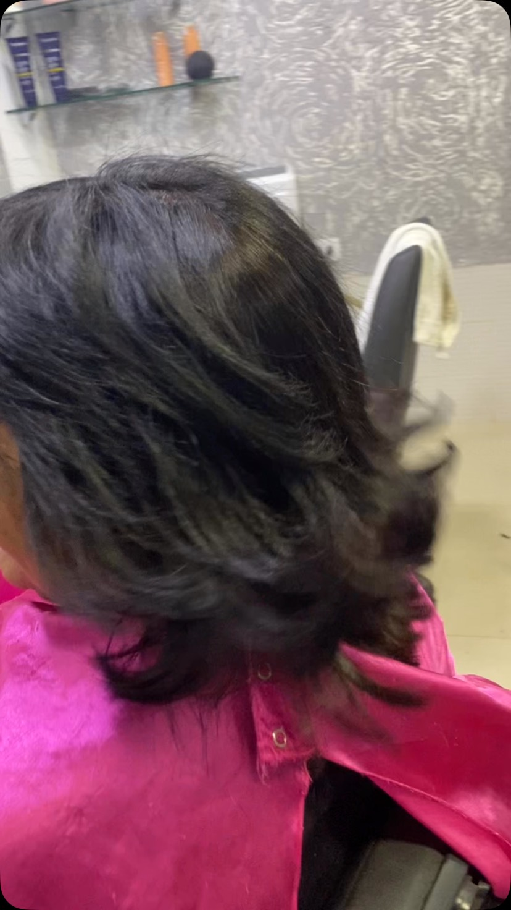
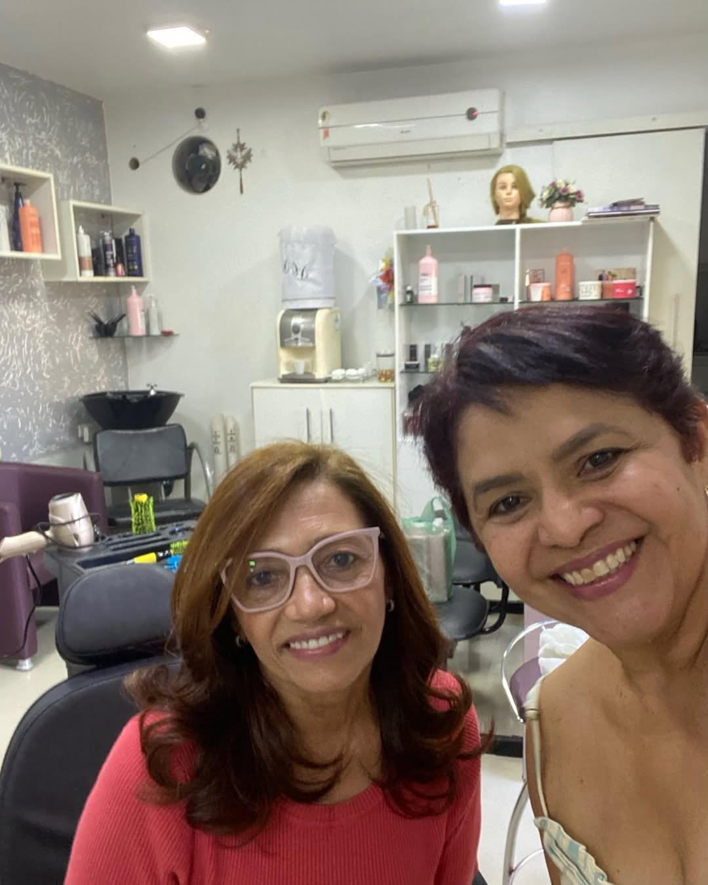

Cortes
Quer renovar o formato ou manter o corte em dia? Conheça nossos trabalhos, com atenção especial aos cabelos curtos.
Consultar atendimentoTeresina / PI
Um salão para a rotina da família, com atenção aos cabelos curtos e aos cuidados que fazem parte do seu dia.

Conheça os nossos atendimentos. Consulte indicação, valores e horários diretamente com a equipe.
Quer renovar o formato ou manter o corte em dia? Conheça nossos trabalhos, com atenção especial aos cabelos curtos.
Consultar atendimentoConsulte as possibilidades de cor e finalização. Combine o atendimento com a gente.
Consultar atendimentoUm momento para colocar os cuidados em dia. Fale com o salão sobre horários e disponibilidade.
Consultar atendimento
Aqui na Morada Nova, vamos conversar sobre o corte, a cor e o momento que você quer reservar para se cuidar. Conheça o salão e combine seu horário pelo WhatsApp.
Veja mais trabalhos no nosso InstagramFale com a gente para combinar seu atendimento.
Conversar pelo WhatsAppConsulte nossos horários pelo WhatsApp.
Contato: (86) 98802-7882
Use o WhatsApp para contar o atendimento que você procura e consultar os horários disponíveis.
No nosso Instagram você acompanha as publicações e conhece mais do que fazemos por aqui.
Converse com a equipe pelo WhatsApp. Vamos apresentar as opções para o atendimento que você procura.